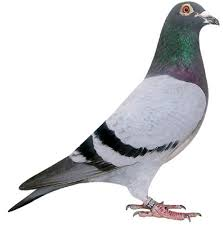
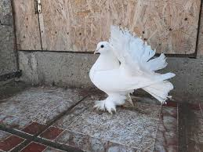
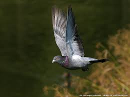
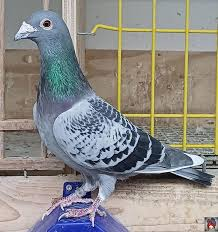

SCURT ISTORIC
Columbofilia implică mai mult decât participarea la concursuri sau creșterea unor păsări valoroase. În esență, totul pornește de la porumbel – o pasăre cu o istorie impresionantă și o diversitate remarcabilă.
Porumbeii au fost domesticiți de mii de ani și au fost folosiți în trecut pentru transportul mesajelor, în scopuri religioase sau simbolice, dar și pentru carne sau penaj. Cu timpul, oamenii au început să-i selecționeze pentru calități specifice, formând rase distincte.
CLASIFICARE GENERALĂ
Porumbei sportivi: selecționați pentru viteză și orientare.

Porumbei de ornament: apreciați pentru aspectul lor distinct.

Porumbei de zbor special: capabili de acrobații, înălțare sau zbor în stol.

Porumbei de reproducție: aleși pentru a transmite calități genetice.
CARACTERISTICI GENERALE
Se pot întoarce acasă de la sute de kilometri.
Trăiesc în medie 10–15 ani, dar pot depăși 20 cu îngrijire adecvată.
Au o memorie spațială extraordinară.
Pot recunoaște fețe umane și răspunde la dresaj.